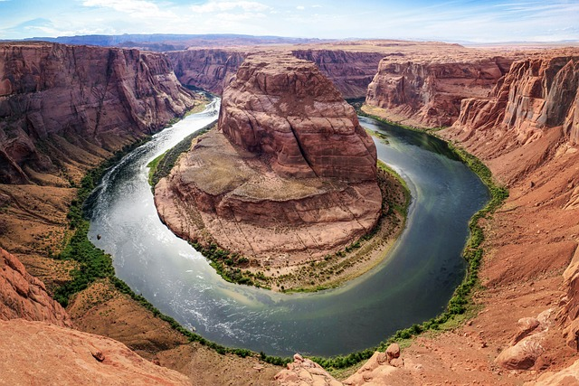
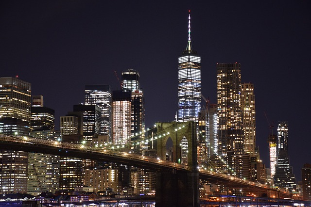
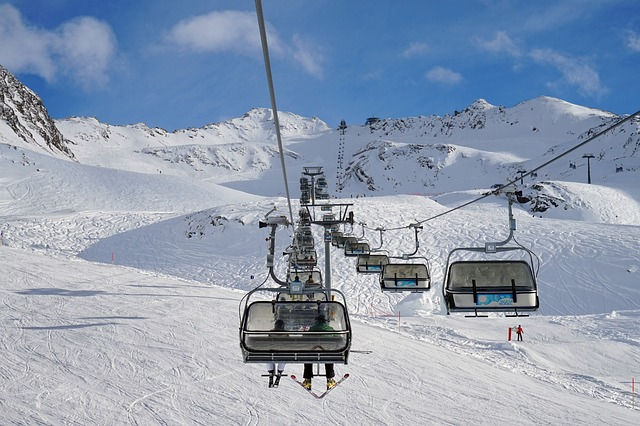
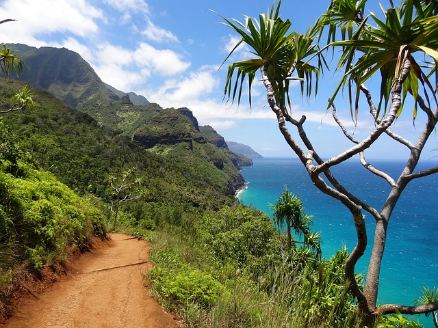

Miejsca warte odwiedzenia
Wielki Kanion
Grand Canyon (Wielki Kanion) jest jedną z największych atrakcji turystycznych w Stanach Zjednoczonych, która przyciąga setki tysięcy turystów każdego roku. Położony w północnej Arizonie, ten ogromny cud natury został wyrzeźbiony przez rzekę Kolorado w ciągu kilku milionów lat mierzy obecnie 446 km długości, ponad 1,6 km głębokości i do 29 km szerokości. Niesaowity rozmiar i kolorowy krajobraz kanionu, oferuje zwiedzającym widoki, które na długo pozostaną w pamięci. Wielki Kanion znajduje się na terenie parku narodowego, jak również na terenie rezerwatów Indian Hualapai i Havasupai. Jest on podzielony na dwie główne części – popularną Południową Obręcz i odległą Północną Obręcz. Jako najbardziej dostępna część dla turystów, Południowa Obręcz zawiera wiele historycznych miejsc, takich jak El Tovar Hotel, Grand Canyon Railway Depot i wieża Desert View Watchtower. W Południowej Obręczy znajduje się również Grand Canyon Village, w której wielu turystów decyduje się na nocleg. Znajduje się tam również wiele dobrze oznakowanych szlaków, z których mogą skorzystać osoby lubiące piesze wycieczki. Jest to m.in. South Kaibab Trail. Jeśli ktoś lubi naprawdę długie wędrówki to świetnym rozwiązaniem będzie wyprawa szlakiem Rim-to-Rim Trail. Jedną z najbardziej popularnych atrakcji w Kanionie jest Havasu Falls, spektakularny wodospad, który spływa z wysokości 37 metrów. Inne atrakcje w Kanionie to spływy pontonami, wycieczki jeepami, przejażdżki helikopterem oraz Skywalk, szklana konstrukcja widokowa rozciągająca się na wysokości 1 200 metrów nad krawędzią Wielkiego Kanionu.
Nowy York
Uznawany za klejnot Stanów Zjednoczonych (jeśli chodzi o obszary miejskie), Nowy Jork jest gigantycznym miastem pełnym kultowych miejsc, obszarów i budynków. Znany na całym świecie ze swojej koncentracji drapaczy chmur i słynnych atrakcji, Nowy Jork jest wizytówką USA. Najsłynniejszymi dzielnicami w Nowym Jorku są bez wątpienia Manhattan, Brooklyn, Queens, The Bronx oraz Staten Island. Do tego Nowy Jork jest miastem, w którym mieszkają ludzie z najróżniejszych stron świata, dzięki czemu jest on barwny kulturowo. Do najciekawszych zabytków Nowego Jorku, które można zwiedzić można z pewnością zaliczyć Statułę Wolności, Empire State Building czy Rockefeller Center. Jednym z najważniejszych historycznych miejsc w mieście jest natomiast Ellis Island, gdzie miliony imigrantów po raz pierwszy przybyły do Ameryki. W Nowym Jorku znajdują się również jedne z najwspanialszych muzeów i galerii sztuki na świecie. Są to m.in. Metropolitan Museum of Art, Guggenheim Museum oraz American Museum of Natural History. Warto także wspomnieć o Manhattanie, który jest dzielnicą teatralną Nowego Jorku słynącą z popularnych na całym świecie teatrów na Broadwayu. Pulsujący neonami i błyszczącymi billboardami Times Square to olśniewająca i tętniąca życiem dzielnica rozrywki najchętniej odwiedzana przez turystów każdego roku. Dla tych, którzy potrzebują złapać oddech od całego zgiełku Nowego Jorku warto wybrać się do Central Parku, w którym można się zrelaksować wśród otwartych, zielonych przestrzeniom, ogrodami, leśnymi ścieżkami i rekreacją na świeżym powietrzu
Aspen
Aspen to jeden z najbardziej znanych ośrodków narciarskich na świecie, położony w odległej części Gór Skalistych w stanie Kolorado. Aspen (po polsku drzewo osika) swoją nazwę zawdzięcza obfitości drzew osikowych, które porastają ten region, będący dawnym obozem górniczym, który został przekształcony w popularny ośrodek turystyczny w połowie XX wieku. Miasto położone jest pośród wspaniałej, pokrytej śniegiem scenerii i posiada cztery pokaźne stoki narciarskie – Aspen Highlands, Ajax Mountain, Buttermilk i Snowmass. Wszystkie z nich są rozległymi terenami, na których można uprawiać narciarstwo, snowboarding, saneczkarstwo, czy również przejechać się skuterami śnieżnymi by poczuć większą dawkę adrenaliny. Chociaż Aspen jest znane wśród ludzi głównie jako zimowa kraina szaleństwa, to warto je również odwiedzić o każdej porze roku. Jego górskie krajobrazy doskonale nadają się do wszelkiego rodzaju zajęć rekreacyjnych na świeżym powietrzu tj. wspinaczki i spacery górskie czy jazda na rowerze. Ciekawymi miejscami, które warto zwiedzić będąc w Aspen jest Wheeler Opera House i kościół Aspen Community Church, które charakteryzuje ceglana zabudowa
Hawaje
Znane na całym świecie ze swojego zapierającego dech w piersiach piękna, Hawaje leżą daleko od wybrzeży Kalifornii na środku Oceanu Spokojnego. Przez wielu uważane są za najbardziej rajską i najpiękniejszą wyspę świata. Składający się ze 137 wysp archipelag wulkaniczny od dawna przyciąga turystów do swoich wybrzeży ze względu na oszałamiające krajobrazy, piękne plaże i bogate dziedzictwo kulturowe. Hawaje mogą pochwalić się mnóstwem cudów natury. Wybrzeże NaPali, kanion Waimea i słoneczna plaża Waikiki należą do najbardziej znanych miejsc na Hawajach. Ze względu na wspaniałą scenerię, warto spędzać jak najwięcej czasu na świeżym powietrzu, wędrując wśród wulkanów, surfując po okolicznych falach lub snorkelując nad kolorowymi rafami koralowymi. Ponieważ był to ostatni stan, który przyłączył się do USA w 1959 roku, wyspy wciąż zachowują wiele ze swojej unikalnej hawajskiej tożsamości. Turyści mogą zanurzyć się w bogatej kulturze i dziedzictwie Hawajów podczas pobytu w jednym z luksusowych kurortów, które znajdują się na tym archipelagu. Spośród wielu wysp, Oahu, Maui i Kauai są najbardziej popularne ze względu na ich naturalne piękno i obfitość atrakcji turystycznych